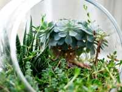
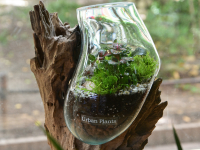
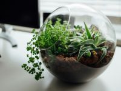

25-60-60")
Флорариумы
Флорариумы — это миниатюрные зелёные миры, заключённые в прозрачные стеклянные сосуды, которые привносят в любой интерьер атмосферу уюта и гармонии. В Julia's Flowers мы предлагаем уникальные композиции флорариумов, которые объединяют растения, декоративные камни, мох, песок и другие природные элементы. Эти маленькие "сады" становятся настоящим украшением вашего дома или офиса, создавая неповторимый и живой акцент в пространстве.
  
Флорариумы идеально подходят для тех, кто ценит природу, но не всегда имеет возможность ухаживать за традиционными растениями. Они компактны, долговечны и не требуют сложного ухода, что делает их прекрасным вариантом для тех, кто хочет наслаждаться зеленью, но не имеет времени на постоянный уход. Они могут стать необычным и стильным подарком для любого случая — будь то день рождения, годовщина или просто желание порадовать близкого человека. Каждый флорариум в Julia's Flowers создаётся вручную, с учётом всех деталей и особенностей композиции. Наши флористы тщательно подбирают растения и декоративные элементы, чтобы создать гармоничные и эстетически привлекательные решения. В таких флорариумах можно увидеть экзотические растения, редкие суккуленты, а также элементы, которые подчеркнут природную красоту и создадут уютную атмосферу. Эти композиции идеально подходят для украшения интерьера, особенно в офисах, квартирах или на рабочем столе. Их можно разместить на полке, в углу или на столе, при этом флорариумы займут минимальное пространство, но станут ярким акцентом, привлекая внимание своим дизайном и живыми растениями. Флорариумы — это не просто украшение, это маленький кусочек природы, который можно держать в пределах своего пространства, наслаждаться зелёными растениями и восхищаться их гармонией каждый день. Перейти на главную страницу